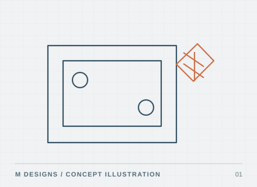
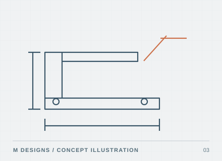
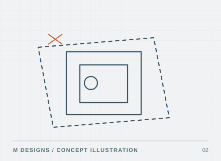
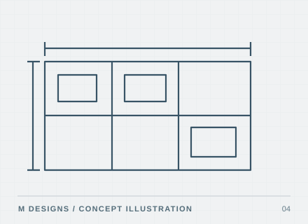
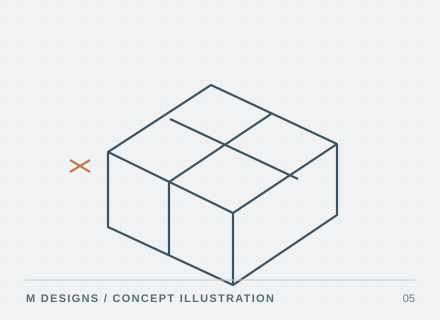
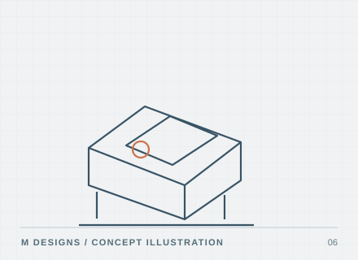

CAD drawing amendments
Redline mark-ups, revisions and updates to existing drawings. Ideal when you need one change made correctly without committing to a large design package.
- Redline revisions
- Drawing updates
- PDF / DWG deliverables
CAD drafting services · Colchester & Essex
Drawing support for local fabricators, joiners, carpenters, builders, architects and engineering contractors. From workshop details to straightforward 3D models, each job is scoped around agreed information, deliverables and timescales.

CAD • DRAWINGS • MODELLINGServices
A selective service for clearly defined projects in Colchester, Essex and nearby areas. Share your drawings or dimensions and I'll confirm whether the job is a good fit.

Redline mark-ups, revisions and updates to existing drawings. Ideal when you need one change made correctly without committing to a large design package.

Convert a dimensioned site sketch, joinery layout, existing PDF or legacy drawing into a tidy CAD file that can be updated and reused.
Practical fabrication, joinery and component details prepared from supplied design information and dimensions, for workshop or customer review.

Plans, elevations, basic construction details, joinery layouts and equipment arrangements based on agreed or approved information.

SketchUp models for bespoke joinery, simple components, construction arrangements and mechanical installations.

One-off physical models and print-ready geometry for concept checks, basic fit testing and practical ideas.
How it works
A sketch, PDF, photo or existing drawing is enough to start a conversation.
We agree the drawing, CAD file or model and any key constraints.
Receive a defined quotation, exclusions and realistic timescale.
Receive agreed files for review and use in the intended workflow.
Start with a brief
Share a clear brief, existing sketches or drawings and your required deliverables. I'll review whether the assignment suits the services and time available.
Request a quotation →